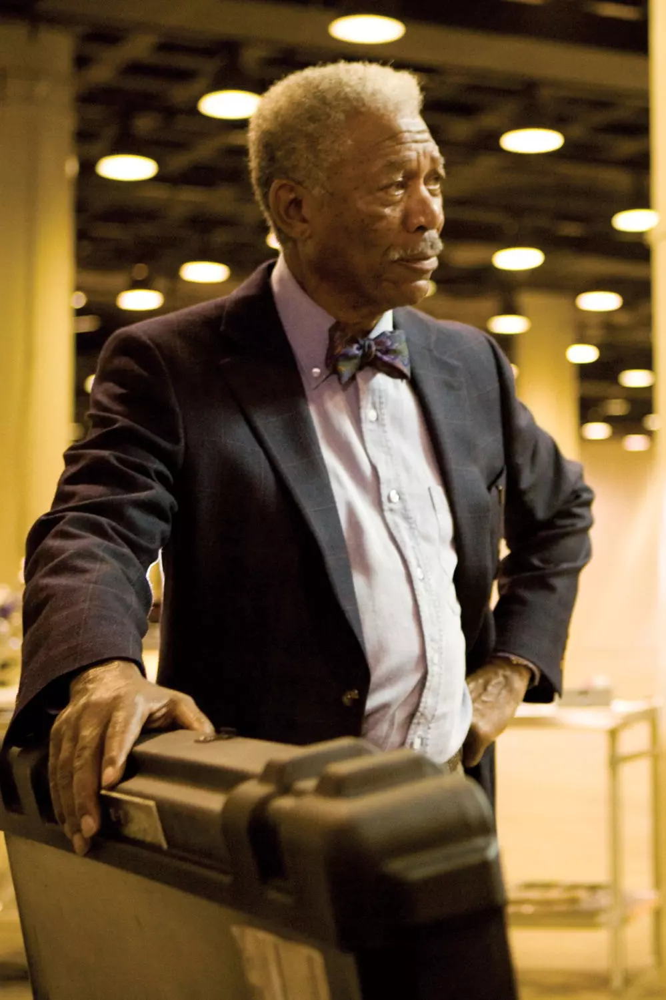

À PROPOS DE WAYNETECH
Une division de Wayne Enterprises au service de l'innovation, de la sécurité et du bien commun.
Notre histoire
WayneTech trouve ses racines dans la vision de Thomas Wayne, qui rêvait d'une ville plus sûre et mieux connectée grâce à la technologie. Fondée au début des années 2000 comme division de recherche de Wayne Enterprises, WayneTech s'est depuis imposée comme un pôle d'innovation incontournable, sous la direction de Lucius Fox.
Ce qui a commencé comme un laboratoire discret s'est transformé en un réseau de divisions spécialisées — de l'aérospatial à la biotechnologie — toutes animées par une même conviction : la technologie doit protéger, pas seulement impressionner.
Notre mission
Innovations
Repousser les limites de la science pour anticiper les défis de demain plutôt que de les subir.
Sécurité
Concevoir chaque technologie avec, en premier lieu, la protection de ceux qui l'utilisent.
Accessibilité
Rendre nos avancées utiles autant aux civils qu'aux professionnels de terrain.
Impact durable
Construire des solutions pensées pour durer, pas pour l'effet d'annonce.
Quelques dates clés
- 2003
- Création officielle de la division AeroSpace.
- 2011
- Lancement des premiers programmes Biotech & Materials.
- 2017
- Déploiement du réseau Secure-Link à l'échelle de Gotham.
- 2024
- Reprise du Projet Métro imaginé par Thomas Wayne.
- 2026
- WayneTech poursuit l'expansion de son catalogue civil et professionnel.
Notre direction
Bruce Wayne
PDG de Wayne Enterprises, Bruce Wayne a hérité très jeune de la direction du groupe familial, avec une conviction chevillée au corps : une entreprise de cette envergure doit servir la ville qui l'a vue naître, pas seulement ses actionnaires.
Discret sur les détails opérationnels, il laisse une large autonomie à ses équipes de recherche et intervient personnellement sur les projets à fort impact sociétal — le Projet Métro en tête, qu'il considère comme un prolongement direct de la vision de son père, Thomas Wayne.
Sous sa présidence, WayneTech est passée d'un laboratoire discret à l'une des divisions les plus stratégiques du groupe, avec un mandat clair : innover sans jamais perdre de vue la sécurité de ceux que la technologie est censée protéger.

Lucius Fox
Directeur de la division WayneTech, Lucius Fox en pilote la recherche et le développement depuis ses débuts. Ingénieur de formation, il a bâti une carrière sur une idée simple : la technologie la plus avancée ne vaut rien si elle n'est pas fiable sur le terrain.
C'est sous son impulsion que WayneTech a structuré ses différentes divisions — AeroSpace, Biotech & Materials, Secure Link — et mis en place les protocoles de test rigoureux qui caractérisent aujourd'hui chaque produit sorti des laboratoires du groupe.
Reconnu pour sa rigueur autant que pour sa discrétion, Lucius Fox reste la mémoire technique de WayneTech : peu de projets, du prototype à la mise en service, échappent à son regard.